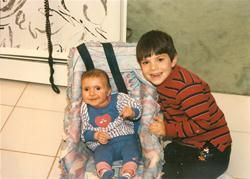
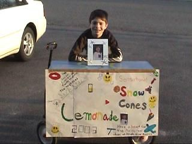
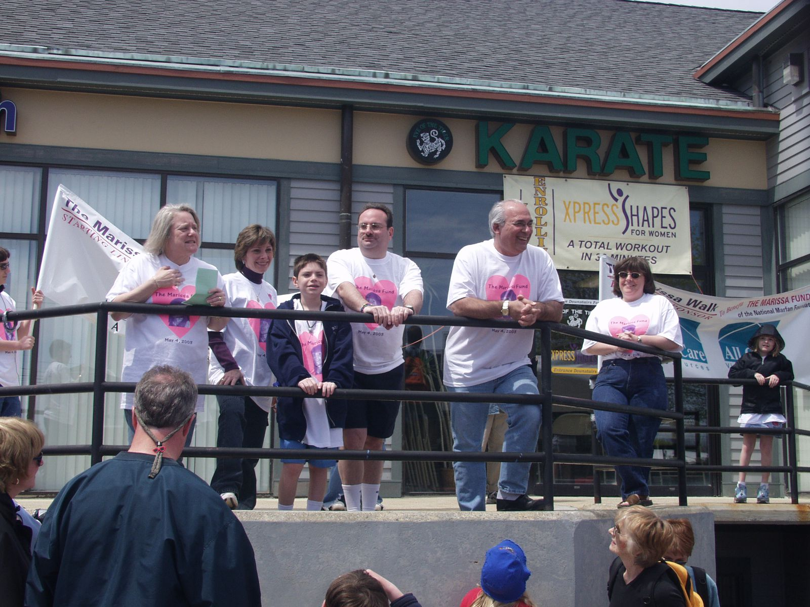

Walk for Victory 2019
tl;dr you can donate here
Nearly twenty three years ago at the close of the summer my sister Marissa was born. At her birth, she was diagnosed with Marfan Syndrome, a genetic disorder affecting the connective tissue. I didn’t know this at the time—I was only six. She soon began to live a life different from a healthy child. She had frequent hospital appointments, a home health aid to help my parents take care of her during the day, and many physical therapists. To me, this all seemed normal; I had nothing to compare it to. During her life she had two open heart surgeries and a spinal surgery, but the two of us treated it more like business as usual rather than a brush with facing mortality. That was how the two of us faced hardships—not necessarily oblivious to their existences, but filled with unflagging endurance, unconcerned with the potential disasters that may lie ahead.

A few years before her sudden death when she was four years old, I began to raise money for the Marfan Foundation. Shortly after her spinal surgery, I shut myself in my bedroom and spent the afternoon crafting a “Surf Side Lemonade” sign. I wheeled a wagon with the sign down to the end of the street along with a friend and shouted “lemonade for charity!” After a few days, I had managed to raise over $70 for the Marfan Foundation. Years later, as I approached the end of middle school, a tumultuous time in my life dealing with my Marissa's death, I teamed up with my family and karate studio—surprising fact: I earned a black belt in Shotokan—to launch an annual "Marissa Walk" in her memory. For five years we held the walk, bringing together family, friends, and strangers to raise more than $100,000 for the Marfan Foundation.

Time went on, I went off to college, becoming self-absorbed in the focused life of an MIT undergraduate. Going home, though only an hour drive away, felt like a transatlantic journey, and so much of what I did before college firmly took a backseat. My fundraising efforts subsided, until several years ago when the Marfan Foundation began their nationwide Walk for Victory program. No, the walk was not centered on Marissa or her memory, but instead focused on the families affected with Marfan Syndrome and their efforts to combat the disease.

Though our lives have changed—and the Marfan Foundation has certainly chained too—my family comes together each year to raise money in my sister's memory.
Over the past couple decades since my sister's death, groundbreaking research funded by the Marfan Foundation has shown the potential to mitigate the complications caused by Marfan Syndrome. The Marfan Foundation has stepped up their tremendous outreach and education efforts, as well as the care and support that it provides to families. We are entering a time when those affected with Marfan Syndrome are living longer and healthier lives. At an unprecedented pace, more lifesaving diagnoses are being made and quality of life is improving.
I am walking in the Walk for Victory to support the Marfan Foundation in their efforts. If you are able to, I ask you to support me in my fundraising efforts and give what you can. You can check out my family's page here.
[A quick addendum about donations, as I am always hesitant to ask for them. There are many wonderful non-profits worthy of your donations. If you're reading this page, there's a good chance that you could send $1, $10, $100, maybe $1000 to help people and organizations that need the cash more than you do. I certainly hope that you give to these organizations what you can. And if you cannot give, I hope your finances are either in order or trending that way. If a donation to support me fits into your donations, that is terrific and I am so glad for your support. If not, that's cool too.]